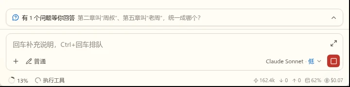
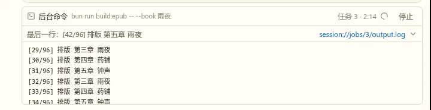

已定第 1 轮：子代理卡片
选了 C 的样子，但不合成一组：每次派发一张卡，卡头是名字和状态，下面一行进度；几张卡上下排着。卡片高度不随文字变：进度和结果第一句都只占一行，不自动展开；点开看结果全文时，全文区限高、在区内滚动（图里“称谓检查”是点开的）。

都是静态稿：真实的对话视图和 nb-ui 组件，新加的部分是草稿，数据是写死的样本。第 4 轮看第 3 轮改过的三样：会话面板再优化后的两版，异步提问与后台命令卡片的改动。
两版共同的改动：左边不再留折叠箭头的空槽，所有图标对齐；折叠开关写成“4 个子代理”放在父会话第二行的右边；收起时如果有子代理在等你处理，父会话行写“子代理等你处理”（图里的“人物小传”）；子会话挂在父会话标题下面，一条细线连着，状态是图标（运行中转圈、完成打勾、出错红叉）或“等你处理”。区别只在子会话占几行。
名字后面接着写正在做什么；派得多时也不长。窄的左栏里说明会截得很短。
和普通会话一样两行，说明能多显示一些；派得多时面板拉得很长。
两版都有的毛病：父会话第二行要放说明、状态和“4 个子代理”，左栏窄时说明只剩几个字。

阴影换成向导收起的小条那一层，圆角与输入框相同，右上角收起；收起后是一条，写有几个问题、第一个问题的前半句。这条规则已写进 UI 规范（停靠的面不用浮层的阴影档，圆角同贴着的面）。

点第二行展开，看输出的最后若干行（运行中跟着更新），限高、区内滚动，和子代理卡片的结果一个道理；全文仍是右边的输出文件。
选了 C 的样子，但不合成一组：每次派发一张卡，卡头是名字和状态，下面一行进度；几张卡上下排着。卡片高度不随文字变：进度和结果第一句都只占一行，不自动展开；点开看结果全文时，全文区限高、在区内滚动（图里“称谓检查”是点开的）。